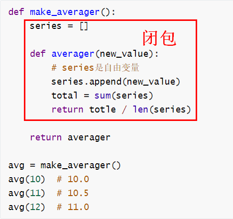

任何把函数当做一等对象的语言，它的设计者都要面对一个问题：作为一等对象的函数在某个作用域中定义，但是可能会在其他作用域中调用，如何处理自由变量？
自由变量（free variable），未在局部作用域中绑定的变量。
为了解决这个问题，Python 之父 Guido Van Rossum 设计了闭包，有如神来之笔，代码美学尽显。在讨论闭包之前，有必要先了解 Python 中的变量作用域。
变量作用域
先看一个全局变量和自由变量的示例：
>>> b = 6
>>> def f1(a):
... print(a)
... print(b)
...
>>> f1(3)
3
6
函数体外的 b 为全局变量，函数体内的 b 为自由变量。因为自由变量 b绑定到了全局变量，所以在函数 f1()中能正确 print。
如果稍微改一下，那么函数体内的 b 就会从自由变量变成局部变量：
>>> b = 6
def f1(a):
... print(a)
... print(b)
... b = 9
...
>>> f1(3)
3
Traceback (most recent call last):
File "<input>", line 1, in <module>
File "<input>", line 3, in f1
UnboundLocalError: local variable 'b' referenced before assignment
在函数 f1()后面加上b = 9报错：局部变量 b 在赋值前进行了引用。
这不是缺陷，而是 Python 设计：Python 不要求声明变量，而是假定在函数定义体中赋值的变量是局部变量。
如果想让解释器把 b 当做全局变量，那么需要使用 global 声明：
>>> b = 6
>>> def f1(a):
... global b
... print(a)
... print(b)
... b = 9
...
>>> f1(3)
3
6
闭包
回到文章开头的自由变量问题，假如有个叫做 avg 的函数，它的作用是计算系列值的均值，用类实现：
class Averager():
def __init__(self):
self.series = []
def __call__(self, new_value):
self.series.append(new_value)
total = sum(self.series)
return totle / len(self.series)
avg = Averager()
avg(10) # 10.0
avg(11) # 10.5
avg(12) # 11.0
类实现不存在自由变量问题，因为 self.series 是类属性。但是函数实现，进行函数嵌套时，问题就出现了：
def make_averager():
series = []
def averager(new_value):
# series是自由变量
series.append(new_value)
total = sum(series)
return totle / len(series)
return averager
avg = make_averager()
avg(10) # 10.0
avg(11) # 10.5
avg(12) # 11.0
函数 make_averager()在局部作用域中定义了 series 变量，它的内部函数 averager()的自由变量 series 绑定了这个值。但是在调用 avg(10)时，make_averager()函数已经 return 返回了，它的局部作用域也消失了。没有闭包的话，自由变量 series 一定会报错找不到定义。
那么闭包是怎么做的呢？闭包是一种函数，它会保留定义时存在的自由变量的绑定，这样调用函数时，虽然定义作用域不可用了，但是仍然能使用那些绑定。
如下图所示：

闭包会保留自由变量 series 的绑定，在调用 avg(10)时继续使用这个绑定，即使 make_averager()函数的局部作用域已经消失。
nonlocal
把上面示例的需求稍微优化下，只存储目前的总值和元素个数：
def make_averager():
count = 0
total = 0
def averager(new_value):
count += 1
total += new_value
return total / count
return averager
运行后会报错：局部变量 count 在赋值前进行了引用。因为 count +=1 等同于 count = count + 1，存在赋值，count 就变成局部变量了。total 也是如此。
这里如果把 count 和 total 通过 global 关键字声明为全局变量，显然是不合适的，它们作用域最多只扩展到 make_averager()函数内。为了解决这个问题，Python3 引入了 nonlocal 关键字声明：
def make_averager():
count = 0
total = 0
def averager(new_value):
nonlocal count, total
count += 1
total += new_value
return total / count
return averager
nonlocal 的作用是把变量标记为自由变量，即使在函数中为变量赋值了，也仍然是自由变量。
注意，对于列表、字典等可变类型来说，添加元素不是赋值，不会隐式创建局部变量。对于数字、字符串、元组等不可变类型以及None来说，赋值会隐式创建局部变量。示例：
def make_averager():
# 可变类型
count = {}
def averager(new_value):
print(count) # 成功
count[new_value] = new_value
return count
return averager
可变对象添加元素不是赋值，不会隐式创建局部变量。
def make_averager():
# 不可变类型
count = 1
def averager(new_value):
print(count) # 报错
count = new_value
return count
return averager
count 是不可变类型，赋值会隐式创建局部变量，报错：局部变量 count 在赋值前进行了引用。
def make_averager():
# None
count = None
def averager(new_value):
print(count) # 报错
count = new_value
return count
return averager
count 是 None，赋值会隐式创建局部变量，报错：局部变量 count 在赋值前进行了引用。
小结
本文先介绍了全局变量、自由变量、局部变量的概念，这是理解闭包的前提。闭包就是用来解决函数嵌套时，自由变量如何处理的问题，它会保留自由变量的绑定，即使局部作用域已经消失。对于不可变类型和 None 来说，赋值会隐式创建局部变量，把自由变量转换为局部变量，这可能会导致程序报错：局部变量在赋值前进行了引用。除了使用 global 声明为全局变量外，还可以使用 nonlocal 声明把局部变量强制变为自由变量，实现闭包。
参考资料：
《流畅的 Python》